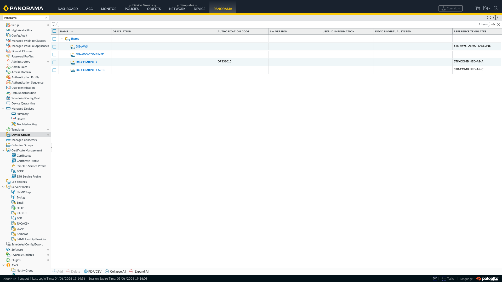
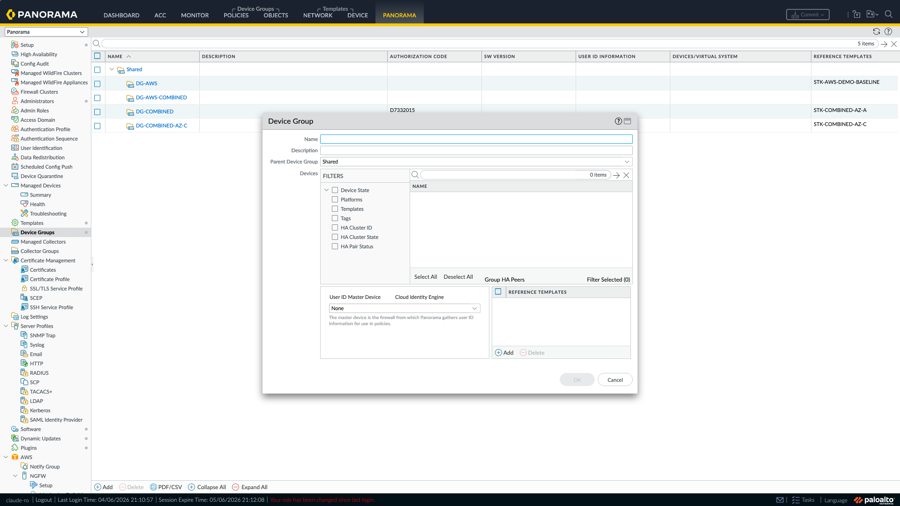
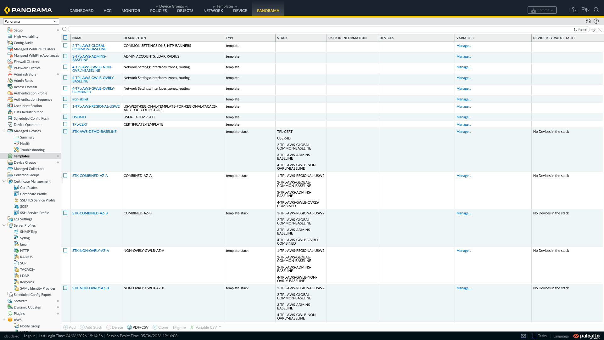
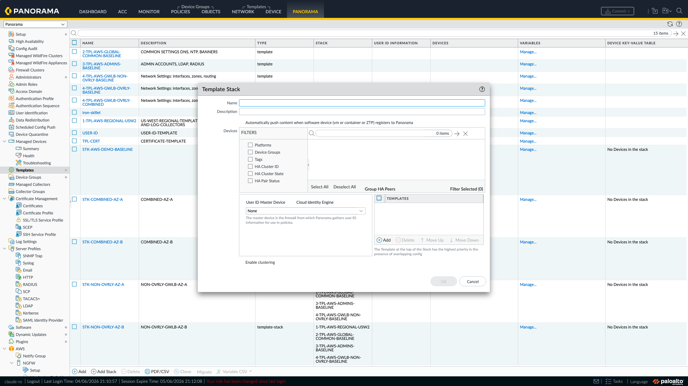
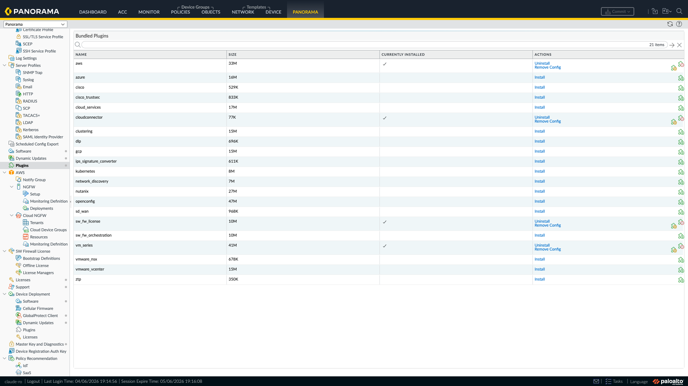
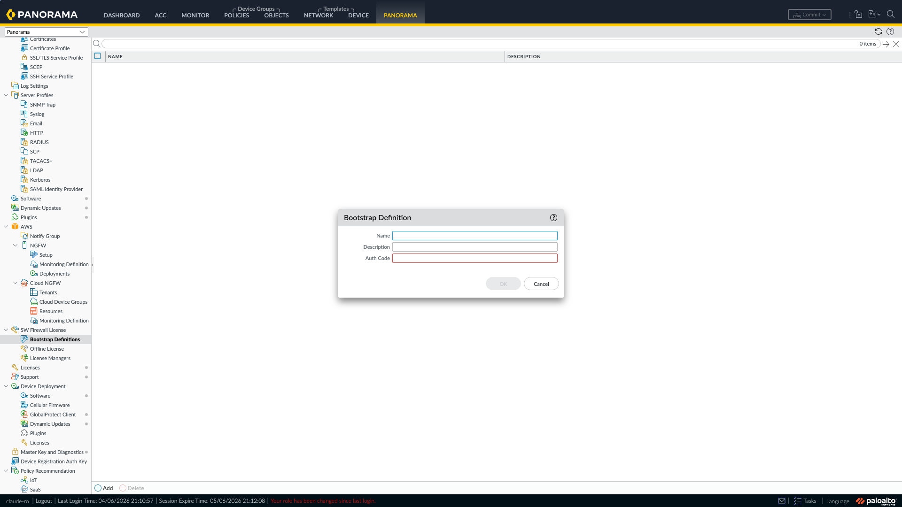
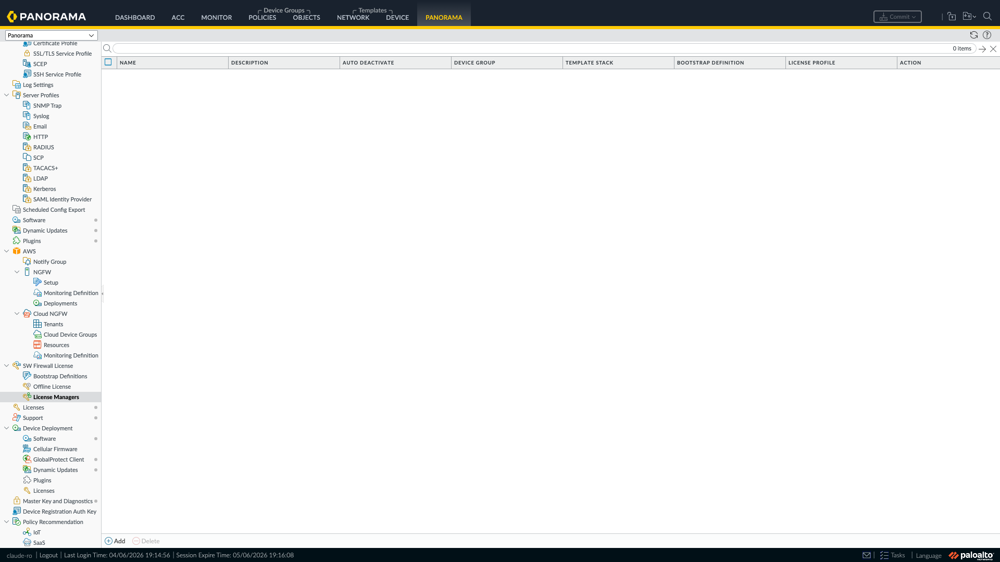
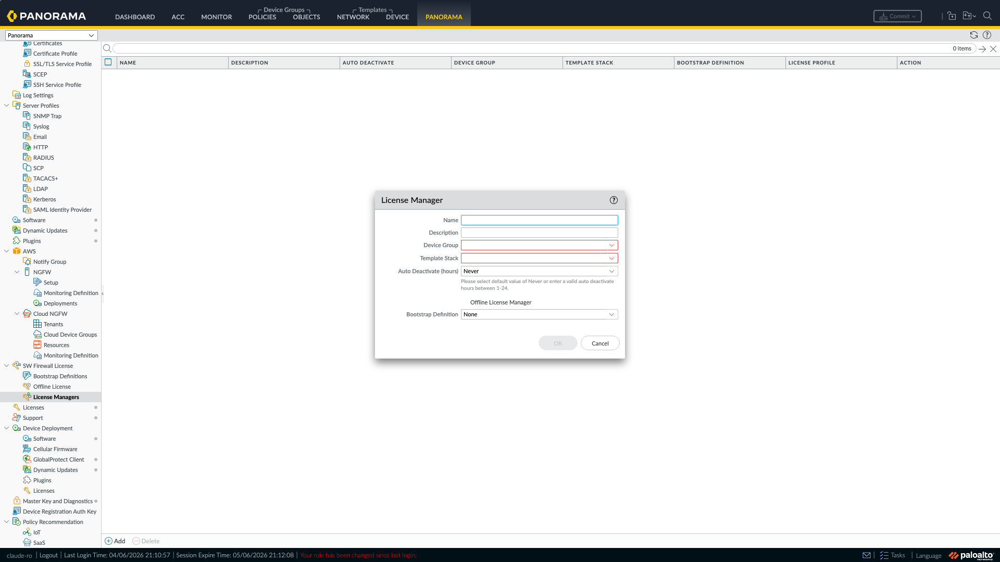
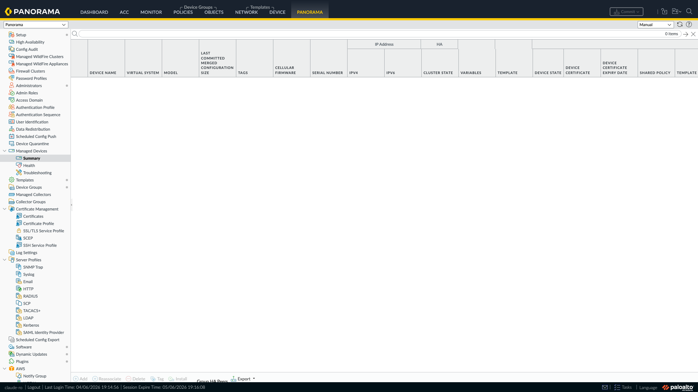

VM-Series Firewall Bootstrap Guide
Step-by-step instructions for bootstrapping Palo Alto Networks VM-Series firewalls on AWS
Prerequisites Checklist
Complete all applicable items before bootstrapping.
- 1. Software NGFW Credit Pool — activated and funded
- 2. Deployment Profile — created with auth code
- 3. Device Group — created on Panorama
- 4. Template Stack — created on Panorama
- 5. Auth Code — obtained for bootstrap definitions
- 6. Auto-Registration PIN ID & PIN Value — generated for device certificates
- 7. Backhaul Connectivity — Direct Connect, VPN, or peering established
- 8. Security Groups — Panorama ports and management access configured
- 9. AWS Marketplace Subscription — accepted for your license model
- 10. VM-Series AMI — identified for your region
- 11. Network Connectivity — management interface can reach Panorama and licensing servers
- 12. Licensing API Key — set on Panorama for license deactivation
Palo Alto Docs: Activate Credits
Before creating deployment profiles or licensing firewalls, you need an active credit pool.
- Log in to the Customer Support Portal.
- Navigate to Assets > Software NGFW Credits.
- Locate your credit pool authorization code (from your purchase order).
- Click Activate and enter the auth code to fund the credit pool.
- Verify the credit pool shows available credits for your desired VM-Series model and subscription tier.
CSP Screenshot Needed: Assets > Software NGFW Credits showing credit pool and Activate button
Palo Alto Docs: Create a Deployment Profile | Manage a Deployment Profile
The deployment profile defines the firewall model, vCPU allocation, and subscriptions that each bootstrapped firewall will receive.
- In the Customer Support Portal, go to Assets > Software NGFW Credits.
- Select your credit pool and click Create Deployment Profile.
- Configure: Profile Name, Firewall Model, vCPU Count, Subscriptions, Token Count.
- Click Create. Note the generated auth code (format:
D1234567).
CSP Screenshot Needed: Create Deployment Profile dialog
A deployment profile is a license SKU bundle — firewall model, vCPU count, and subscription mix (Threat Prevention, WildFire, URL Filtering, etc.). The auth code the profile generates is what each bootstrapping VM-Series presents to license itself.
The profile is not a grouping mechanism for region, cloud, function, or topology. Two firewalls in different clouds can share one profile if they have the same shape; two firewalls in the same VPC can need different profiles if their vCPU counts or subscription tiers differ.
Rule of thumb: one profile per distinct (vCPU count + subscription bundle). A few common patterns:
- All firewalls identical → one profile, one auth code.
- Inbound at 4 vCPU, OBEW at 8 vCPU → two profiles (different vCPU counts).
- Inbound with extra subscriptions (e.g. Advanced WildFire), internal-only with the base bundle → two profiles (different subscriptions) even if the vCPU counts match.
- Same shape deployed across AWS, Azure, and GCP → one profile shared across all three clouds.
Plan your profile count by walking your firewall inventory and grouping by (vCPU count, subscription mix). The number of distinct combinations is the number of profiles — and auth codes — you need.
Palo Alto Docs: Manage Device Groups
- Log in to Panorama and navigate to Panorama > Device Groups.
- Click Add. Set Name to e.g.,
YOUR-DG-HERE(this is yourdgnamevalue). - Click OK, then Commit to Panorama.


Palo Alto Docs: Manage Templates and Template Stacks
- In Panorama, navigate to Panorama > Templates.
- Create a base template first (if none exist): click Add, name it (e.g.,
TPL-BASE-AWS), click OK. - Click Add Stack. Set Name to e.g.,
YOUR-STACK-HERE(this is yourtplnamevalue). Add your base template(s). - Click OK, then Commit to Panorama.


Palo Alto Docs: Manage a Deployment Profile
- In the Customer Support Portal, go to Assets > Software NGFW Credits > Deployment Profiles.
- Locate your deployment profile and copy the Auth Code.
- This code is entered when creating the Bootstrap Definition on Panorama (Panorama > SW Firewall License > Bootstrap Definitions).
CSP Screenshot Needed: Deployment Profiles list showing auth code
Palo Alto Docs: Install a Device Certificate on the VM-Series Firewall
- Log in to the Customer Support Portal.
- Navigate to Products > VM-Series Auth-Codes.
- Click Generate OTP or Create Registration PIN.
- Copy both: PIN ID (UUID format) and PIN Value (hex string).
CSP Screenshot Needed: Generate Registration PIN page
CSP Screenshot Needed: PIN ID and PIN Value display
If Panorama is on-premises:
- AWS Direct Connect — dedicated private connection from your data center to AWS
- Point-to-Point VPN (IPsec) — site-to-site VPN tunnel to the VPC
If Panorama is in AWS:
- Transit Gateway (TGW) — attach both VPCs and configure route tables
- VPC Peering — direct peering between firewall VPC and Panorama VPC
nc -zv <panorama-ip> 3978 from an instance in the firewall management subnet before deploying.
For the full list of ports, see Ports Used for Panorama.
Panorama Communication
| Direction | Protocol | Port | Purpose |
|---|---|---|---|
| Outbound | TCP | 3978 | Device registration and config sync |
| Outbound | TCP | 28443 | Panorama-to-device communication |
| Inbound | TCP | 3978 | Panorama-initiated connections |
| Inbound | TCP | 28443 | Panorama-initiated connections |
Management Access
| Direction | Protocol | Port | Purpose |
|---|---|---|---|
| Inbound | TCP | 443 | Web UI (HTTPS) |
| Inbound | TCP | 22 | SSH access |
Palo Alto Docs: Deploy on AWS
You must accept the AWS Marketplace subscription before launching VM-Series instances. This is a one-time action per AWS account per product listing.
Via AWS Console
- Navigate to the VM-Series marketplace listing for your license model:
- Click Continue to Subscribe.
- Review pricing and click Accept Terms.
Via AWS CLI
Check your current subscription status:
# Check if you've already accepted the terms for BYOL
aws ec2 describe-images \
--owners aws-marketplace \
--filters "Name=product-code,Values=6njl1pau431dv1qxipg63mvah" \
--query 'Images[0].ImageId' \
--output text \
--region us-west-2None or an error, accept the terms via the console links above. AWS Marketplace subscriptions cannot be accepted via the CLI — the console is required for the initial acceptance.
# List available VM-Series BYOL AMIs in us-west-2
aws ec2 describe-images \
--owners aws-marketplace \
--filters "Name=product-code,Values=6njl1pau431dv1qxipg63mvah" \
"Name=state,Values=available" \
--query 'Images | sort_by(@, &CreationDate) | [-5:].{Name:Name, ImageId:ImageId, Created:CreationDate}' \
--output table \
--region us-west-2| License Model | Product Code |
|---|---|
| BYOL | 6njl1pau431dv1qxipg63mvah |
| Bundle 1 (PAYG) | e9yfvyj3uag5uo5j2hjikv74n |
| Bundle 2 (PAYG) | hd44w1chf26uv4p52cdynb2o |
The firewall management interface needs:
- Outbound HTTPS (443) to Panorama IP address(es)
- Outbound HTTPS (443) to
updates.paloaltonetworks.com - DNS resolution capability
Palo Alto Docs: Install a License Deactivation API Key
- Obtain the API key from the Customer Support Portal under Assets > Licensing API.
- SSH into Panorama and run:
request license api-key set key <key> - Verify:
request license api-key show
Method 1: Panorama Licensing Plugin
updates.paloaltonetworks.com.
vm_series) first, then install sw_fw_license. See Plugin IP-Tag Issues if you have multiple plugins installed.
Step 1: Install the SW Firewall License Plugin on Panorama
- Log in to Panorama.
- Navigate to Panorama > Plugins.
- Click Check Now to refresh available plugins.
- Locate
sw_fw_license, click Download, then Install. - Verify it appears under Panorama > SW Firewall License.

Requirements: Panorama 10.0.0+, PAN-OS 9.1.0+ on firewalls, Licensing API key configured (see §12).
Step 2: Create a Bootstrap Definition
- Go to Panorama > SW Firewall License > Bootstrap Definitions.
- Click Add.
- Enter a Name (e.g.,
bsd-aws-prod) and the Auth Code from your deployment profile. - Click OK.

Step 3: Configure a License Manager
- Go to Panorama > SW Firewall License > License Managers.
- Click Add: set Name, Device Group, Template Stack, Bootstrap Definition, and Auto Deactivate timer.
- Click OK, then Commit to Panorama.


Step 4: Get the Bootstrap Parameters
- In License Managers, click Show Bootstrap Parameters in the Action column.
- Copy auth-key and plugin-op-commands.

CSP Screenshot Needed: Show Bootstrap Parameters dialog — requires a configured License Manager
auth-key here is generated by the licensing plugin and is different from a manually created VM auth key. Do not confuse the two.
Step 5a: Configure Terraform bootstrap_options
bootstrap_options = {
# ── Minimum required values ──────────────────────────────────────
plugin-op-commands = "panorama-licensing-mode-on,aws-gwlb-inspect:enable,aws-gwlb-overlay-routing:enable"
auth-key = "YOUR-AUTH-KEY-HERE"
panorama-server = "YOUR-PANORAMA-SERVER-1-HERE"
dgname = "YOUR-DG-HERE"
tplname = "YOUR-STACK-HERE"
# ── AWS-specific options ─────────────────────────────────────────
mgmt-interface-swap = "enable"
# ── Optional: secondary Panorama ─────────────────────────────────
panorama-server-2 = "YOUR-PANORAMA-2-SERVER-HERE"
# ── Optional: DHCP settings ──────────────────────────────────────
dhcp-send-hostname = "yes"
dhcp-send-client-id = "yes"
dhcp-accept-server-hostname = "yes"
dhcp-accept-server-domain = "yes"
# ── Optional (best practice): device certificate auto-registration
vm-series-auto-registration-pin-id = "YOUR-PIN-ID-HERE"
vm-series-auto-registration-pin-value = "YOUR-PIN-VALUE-HERE"
}| Parameter | Description |
|---|---|
plugin-op-commands | Must include panorama-licensing-mode-on as the first command |
auth-key | Generated by the licensing plugin (Step 4), not a manually created VM auth key |
panorama-server | IP address of the primary Panorama |
dgname | Device Group name on Panorama |
tplname | Template Stack name (not a Template) |
Step 5b: AWS User Data One-Liner
mgmt-interface-swap=enable;plugin-op-commands=panorama-licensing-mode-on,aws-gwlb-inspect:enable,aws-gwlb-overlay-routing:enable;auth-key=YOUR-AUTH-KEY-HERE;panorama-server=YOUR-PANORAMA-SERVER-1-HERE;panorama-server-2=YOUR-PANORAMA-2-SERVER-HERE;dgname=YOUR-DG-HERE;tplname=YOUR-STACK-HERE;dhcp-send-hostname=yes;dhcp-send-client-id=yes;dhcp-accept-server-hostname=yes;dhcp-accept-server-domain=yes;vm-series-auto-registration-pin-id=YOUR-PIN-ID-HERE;vm-series-auto-registration-pin-value=YOUR-PIN-VALUE-HERE= signs. AWS supports semicolons or newlines as delimiters. Do not include authcodes or vm-auth-key with this method.
Optional: GWLB Endpoint Mappings to Sub-Interfaces
Map AWS Gateway Load Balancer endpoints to specific sub-interfaces:
plugin-op-commands=panorama-licensing-mode-on,aws-gwlb-inspect:enable,aws-gwlb-overlay-routing:enable,aws-gwlb-associate-vpce:YOUR-AZ-A-INBOUND-ENDPOINT-ID@ethernet1/1.10,aws-gwlb-associate-vpce:YOUR-AZ-B-INBOUND-ENDPOINT-ID@ethernet1/1.10,aws-gwlb-associate-vpce:YOUR-AZ-A-OUTBOUND-ENDPOINT-ID@ethernet1/1.20,aws-gwlb-associate-vpce:YOUR-AZ-B-OUTBOUND-ENDPOINT-ID@ethernet1/1.20,aws-gwlb-associate-vpce:YOUR-AZ-A-EAST-WEST-ENDPOINT-ID@ethernet1/1.30,aws-gwlb-associate-vpce:YOUR-AZ-B-EAST-WEST-ENDPOINT-ID@ethernet1/1.30In this example, each Availability Zone has a dedicated GWLB endpoint per traffic flow, and all endpoints for the same traffic type are mapped to the same sub-interface:
| Sub-Interface | Traffic Flow | Endpoints |
|---|---|---|
ethernet1/1.10 | Inbound | AZ-A + AZ-B inbound endpoints |
ethernet1/1.20 | Outbound | AZ-A + AZ-B outbound endpoints |
ethernet1/1.30 | East-West | AZ-A + AZ-B east-west endpoints |
Each Availability Zone should have its own GWLB endpoint for each traffic flow (inbound, outbound, east-west). All firewalls receive all endpoint mappings regardless of which AZ they are deployed in. A firewall in AZ-A still gets the AZ-B endpoint mappings in its bootstrap configuration — the GWLB handles routing traffic to the correct AZ.
aws-gwlb-overlay-routing:enable is still required alongside aws-gwlb-associate-vpce — overlay routing controls GENEVE encapsulation handling, while endpoint association controls sub-interface mapping. They serve different purposes.
Method 2: Simple User Data Bootstrap
updates.paloaltonetworks.com for licensing. Use a NAT gateway (preferred) or public IP on the management interface (not recommended — lock down the security group tightly).
Required Information
| Information | Source | Example |
|---|---|---|
| Auth Code | Deployment profile | D1234567 |
| Panorama IP(s) | Primary and optional secondary | YOUR-PANORAMA-SERVER-1-HERE |
| Device Group | Device Group on Panorama | YOUR-DG-HERE |
| Template Stack | Template Stack on Panorama | YOUR-STACK-HERE |
Step 1: Generate a VM Auth Key on Panorama
request bootstrap vm-auth-key generate lifetime 8760To view existing keys: request bootstrap vm-auth-key show
Step 2a: Configure Terraform bootstrap_options
bootstrap_options = {
authcodes = "D1234567"
vm-auth-key = "YOUR-VM-AUTH-KEY-HERE"
panorama-server = "YOUR-PANORAMA-SERVER-1-HERE"
dgname = "YOUR-DG-HERE"
tplname = "YOUR-STACK-HERE"
mgmt-interface-swap = "enable"
plugin-op-commands = "aws-gwlb-inspect:enable,aws-gwlb-overlay-routing:enable"
panorama-server-2 = "YOUR-PANORAMA-2-SERVER-HERE"
dhcp-send-hostname = "yes"
dhcp-send-client-id = "yes"
dhcp-accept-server-hostname = "yes"
dhcp-accept-server-domain = "yes"
vm-series-auto-registration-pin-id = "YOUR-PIN-ID-HERE"
vm-series-auto-registration-pin-value = "YOUR-PIN-VALUE-HERE"
}panorama-licensing-mode-on in plugin-op-commands. Uses authcodes + vm-auth-key instead of the plugin-generated auth-key.
Step 2b: AWS User Data One-Liner
authcodes=D1234567;vm-auth-key=YOUR-VM-AUTH-KEY-HERE;panorama-server=YOUR-PANORAMA-SERVER-1-HERE;dgname=YOUR-DG-HERE;tplname=YOUR-STACK-HERE;mgmt-interface-swap=enable;plugin-op-commands=aws-gwlb-inspect:enable,aws-gwlb-overlay-routing:enable;panorama-server-2=YOUR-PANORAMA-2-SERVER-HERE;dhcp-send-hostname=yes;dhcp-send-client-id=yes;dhcp-accept-server-hostname=yes;dhcp-accept-server-domain=yes;vm-series-auto-registration-pin-id=YOUR-PIN-ID-HERE;vm-series-auto-registration-pin-value=YOUR-PIN-VALUE-HEREMethod 3: S3 Bucket Basic Bootstrap
updates.paloaltonetworks.com for licensing. Use a NAT gateway (preferred) or public IP on the management interface (not recommended).
Step 1: S3 Bucket Directory Structure
All five directories must exist, even if empty — the firewall checks for this structure during bootstrap.
s3://your-bootstrap-bucket/
config/
content/
license/
plugins/
software/Creating the Bucket and Directory Structure
# Create the bootstrap bucket
aws s3 mb s3://your-bootstrap-bucket
# Create the required directory structure
aws s3api put-object --bucket your-bootstrap-bucket --key config/
aws s3api put-object --bucket your-bootstrap-bucket --key content/
aws s3api put-object --bucket your-bootstrap-bucket --key license/
aws s3api put-object --bucket your-bootstrap-bucket --key plugins/
aws s3api put-object --bucket your-bootstrap-bucket --key software/Directory and Required Files
| Directory | Required File(s) | Extension | Description |
|---|---|---|---|
config/ | init-cfg.txt | .txt | Bootstrap configuration parameters |
content/ | (empty) | — | Content update files |
license/ | authcodes | no extension | License auth code(s), one per line |
plugins/ | (empty) | — | VM-Series plugin files |
software/ | (empty) | — | PAN-OS image files |
Step 2: Create init-cfg.txt
type=dhcp
panorama-server=YOUR-PANORAMA-SERVER-1-HERE
panorama-server-2=YOUR-PANORAMA-2-SERVER-HERE
tplname=YOUR-STACK-HERE
dgname=YOUR-DG-HERE
vm-auth-key=YOUR-VM-AUTH-KEY-HERE
hostname=fw-prod-01
dns-primary=169.254.169.253
vm-series-auto-registration-pin-id=YOUR-PIN-ID-HERE
vm-series-auto-registration-pin-value=YOUR-PIN-VALUE-HERE=. One parameter per line. Use a plain text editor (no rich text formatting).
Step 3: Create the authcodes File
authcodes with no file extension — not authcodes.txt, not authcodes.key. The firewall expects this exact filename.
D1234567Step 4: Create an IAM Instance Profile
The EC2 instance needs an IAM instance profile granting read access to the S3 bootstrap bucket:
{
"Version": "2012-10-17",
"Statement": [{
"Effect": "Allow",
"Action": ["s3:GetObject", "s3:ListBucket"],
"Resource": [
"arn:aws:s3:::your-bootstrap-bucket",
"arn:aws:s3:::your-bootstrap-bucket/*"
]
}]
}Palo Alto Docs: Bootstrap the VM-Series Firewall in AWS
Step 5: Launch the Instance
Point the VM-Series instance to the S3 bucket via user data:
vmseries-bootstrap-aws-s3bucket=your-bootstrap-bucketMethod 4: S3 Full Bootstrap with bootstrap.xml
updates.paloaltonetworks.com for licensing.
Steps 1–5: Same as Method 3
The S3 bucket structure, init-cfg.txt, authcodes file, IAM instance profile, and launch are the same as Method 3.
Directory and Required Files
| Directory | Required File(s) | Extension | Description |
|---|---|---|---|
config/ | init-cfg.txt, bootstrap.xml | .txt, .xml | Bootstrap params + full config |
content/ | Content update file | (vendor filename) | e.g., panupv2-all-contents-8776-8520 |
license/ | authcodes | no extension | License auth code(s) |
plugins/ | VM-Series plugin (optional) | (vendor filename) | e.g., PanGPS_vm-3.0.2 |
software/ | PAN-OS image(s) | (vendor filename) | e.g., PanOS_vm-11.1.4-h13 |
Step 6: Create bootstrap.xml
Export the running configuration from a known-working reference firewall:
Option A: Web UI
- Log in to a VM-Series firewall with the desired configuration.
- Navigate to Device > Setup > Operations.
- Click Export named configuration snapshot.
- Select
running-config.xmland save. Rename tobootstrap.xml. - Place in the
config/directory alongsideinit-cfg.txt.
Option B: XML API
# Generate an API key
curl -k "https://<firewall-ip>/api/?type=keygen&user=admin&password=<password>"
# Export the running configuration
curl -k "https://<firewall-ip>/api/?type=export&category=configuration&key=<api-key>" -o bootstrap.xmlOption C: CLI
scp export configuration from running-config.xml to <user>@<destination>:/path/bootstrap.xmlPalo Alto Docs: Create the bootstrap.xml File
When using a configuration from another firewall, the following values will differ in a different region/AZ/datacenter:
- Management interface IP, netmask, default gateway
- Default routes and gateway IPs
- Interface IP addresses
- DNS server addresses
- Hostname — should be unique per firewall
- Zone and interface mappings
Review and update these values before deploying. Incorrect network values = unreachable firewall.
Step 7: Add Software and Content Files (Optional)
- Software: Place PAN-OS images in
software/. Include all intermediate versions — the firewall upgrades sequentially. - Content: Place the content update in
content/. Must match the target PAN-OS version. - Plugins: Place a VM-Series plugin image in
plugins/if needed.
SCM Bootstrap Variant
For PAN-OS 11.0+, bootstrap to register with Strata Cloud Manager instead of on-premises Panorama:
bootstrap_options = {
mgmt-interface-swap = "enable"
panorama-server = "cloud"
dgname = "scm_folder_name"
dhcp-send-hostname = "yes"
dhcp-send-client-id = "yes"
dhcp-accept-server-hostname = "yes"
dhcp-accept-server-domain = "yes"
plugin-op-commands = "aws-gwlb-inspect:enable,aws-gwlb-overlay-routing:enable,advance-routing:enable"
vm-series-auto-registration-pin-id = "YOUR-PIN-ID-HERE"
vm-series-auto-registration-pin-value = "YOUR-PIN-VALUE-HERE"
authcodes = "D1234567"
}panorama-server is "cloud" (literal string). dgname maps to the SCM folder name. No tplname, auth-key, or vm-auth-key.
Parameter Reference
init-cfg.txt Parameters
| Parameter | Description | Required |
|---|---|---|
type | dhcp or static | Yes |
ip-address | Management IP (IPv4) | If static |
netmask | Subnet mask | If static |
default-gateway | Default gateway | If static |
hostname | Firewall hostname | No |
dns-primary | Primary DNS server | No |
panorama-server | Primary Panorama IP or cloud | No |
panorama-server-2 | Secondary Panorama IP | No |
tplname | Template Stack name | For Panorama |
dgname | Device Group name | For Panorama |
vm-auth-key | Manual VM auth key | Methods 2–3 |
auth-key | Plugin-generated key | Method 1 |
authcodes | License auth code | Methods 2–4 |
plugin-op-commands | Comma-separated commands | Varies |
mgmt-interface-swap | enable for GWLB | No |
vm-series-auto-registration-pin-id | Registration PIN ID | Recommended |
vm-series-auto-registration-pin-value | Registration PIN value | Recommended |
plugin-op-commands
| Command | Purpose |
|---|---|
panorama-licensing-mode-on | Enable Panorama licensing (Method 1 only) |
aws-gwlb-inspect:enable | AWS GWLB inspection mode |
aws-gwlb-overlay-routing:enable | GWLB overlay routing |
advance-routing:enable | Advanced routing (PAN-OS 11.0+) |
aws-gwlb-associate-vpce:<vpce-id>@<sub-if> | Maps a GWLB endpoint to a sub-interface for traffic flow separation |
Verification
CLI Commands
# System status and PAN-OS version
show system info
# Running configuration
show config running
# License status
request license info
# Panorama connection
show panorama-status
# Bootstrap log details
debug logview component bts_detailsPanorama Verification
- Panorama > Managed Devices > Summary — confirm the firewall appears.
- Verify correct Device Group and Template Stack assignment.
- For Method 1: check Panorama > SW Firewall License > License Managers.

Success Criteria
show system infoshows expected hostname, PAN-OS version, operational moderequest license infoshows all subscriptions as active- Firewall appears in Panorama under correct Device Group and Template Stack
- For Method 4: security policies from
bootstrap.xmlare enforced
Troubleshooting
Common Bootstrap Errors
| Error | Cause | Resolution |
|---|---|---|
| Boot image error | S3 bucket not found or IAM wrong | Verify bucket and IAM role permissions |
| No bootstrap config file | init-cfg.txt missing from /config | Check directory structure |
| Bad networking parameters | Malformed init-cfg.txt | Check for spaces around = |
| Failed license key | Invalid or expired auth code | Verify in Customer Support Portal |
| Failed content update | Content/PAN-OS version mismatch | Use minimum content version |
Firewall Stuck at 192.168.1.1
Bootstrap failed — reverted to factory defaults. Check: init-cfg.txt syntax, S3 access, type parameter.
Troubleshooting Steps
- Bootstrap log:
debug logview component bts_details - Test S3 access:
aws s3 ls s3://your-bucket/config/from a test instance - Validate init-cfg.txt: Check for BOM markers or Windows line endings
- Verify Panorama: Device Group and Template Stack must exist first
- AWS system log: EC2 Console > Monitor and troubleshoot > Get system log
- VM auth key:
request bootstrap vm-auth-key show
Plugin IP-Tag Issues
If multiple plugins are installed on Panorama and one or more is unconfigured, IP-tag forwarding may be blocked.
request plugins dau plugin-name <plugin-name> unblock-device-push yesQuick Reference: Which Method?
| Scenario | Method |
|---|---|
| Auto-scaling, dynamic environments | Method 1 (Panorama licensing plugin) |
| One-off deployment, quick setup | Method 2 (User data with vm-auth-key + authcode) |
| Structured files, no software bundling | Method 3 (S3 basic bootstrap) |
| Air-gapped or fully self-contained | Method 4 (S3 full bootstrap with bootstrap.xml) |
| Strata Cloud Manager managed | SCM variant |